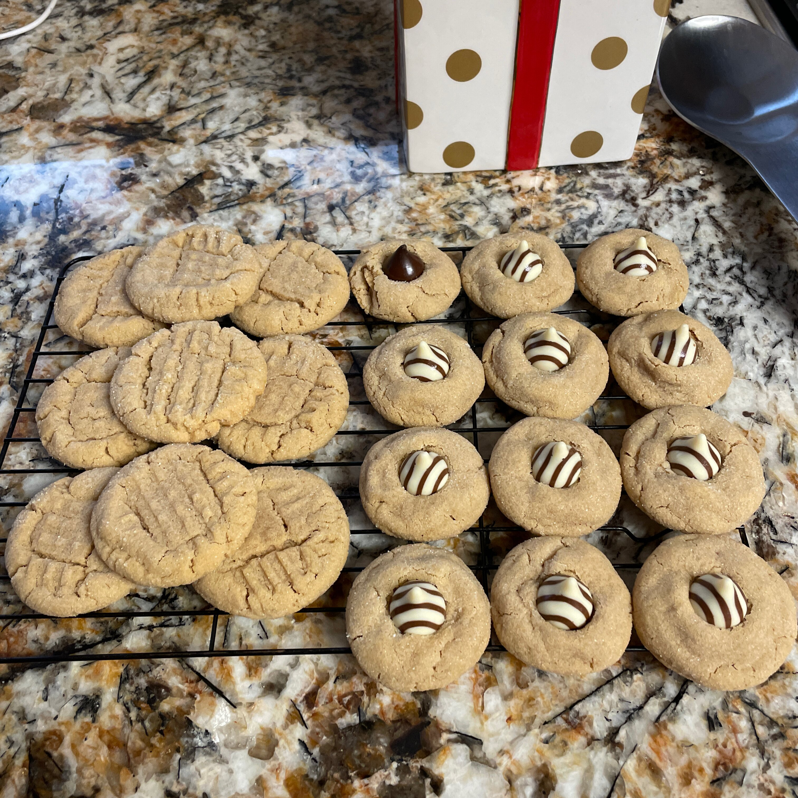

Peant Butter Cookies

Description
Peanut butter cookies which takes 15 mins to prepare , 10 mins to cook with an addition of 1 hour which makesa the total to about 1 hr and 25 mins. It will give you a serving of24 and a yield of 24 dozens
Ingredients
- 1 cup unsalted butter
- 1 cup crunchy peanut butter
- 1 cup white sugar
- 7 cups milk
- 1 cup packed brown sugar
- 2 large eggs eggs
- 2 1/2 cups all-purpose flour
- 1 teaspoon baking powder
- 1/2 teaspoon salt
- 1 1/2 teaspoons baking soda
Steps
- Cream butter, peanut butter, and sugars together in a bowl; beat in eggs.
- In a separate bowl, sift flour, baking powder, baking soda, and salt; stir into butter mixture. Put dough in refrigerator for 1 hour.
- Roll dough into 1 inch balls and put on baking sheets. Flatten each ball with a fork, making a crisscross pattern. Bake in a preheated 375 degrees F oven for about 10 minutes or until cookies begin to brown.
Nutrition Facts
Per Serving:
252 calories;
- Protein 4.5g;
- Carbohydrates 29.7g;
- Fat 13.6g;
- Cholesterol 35.8mg;
- Sodium 209.4mg.